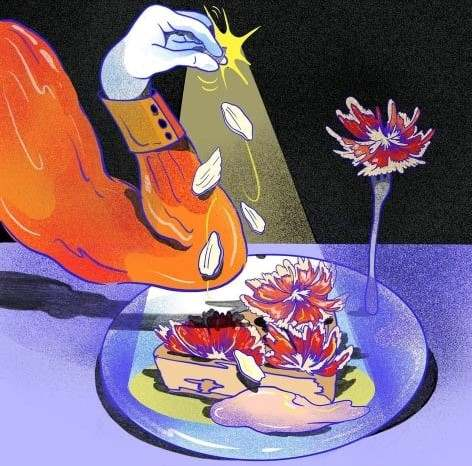

Latest articles
A conversation with Beya Panicha
ILLUSTRATION
As I was reading through the last edition of Gaze Magazine (features works of many talented women, definitely recommend), I came across the work of Beya Panicha, an illustrator and painter from Thailand. Vibrant colors and grainy textures, Beya's universe feels like she...
Recommending: HTRK - Rhinestones
MUSIC

Jonnine Standish continues providing us her dreamy and fragile vocals which she's known for, which you could already appreciate in previous releases. Alongside the vocals, a guitar, with the clearest sound playing both intimate and moving melodies. The vocals and the guitar really take the center place in the music...
A selection of 5 electronic/dance
albums
MUSIC
It has been a while since electronic music overall has been mentioned here so I wanted to share a selection of 5 albums that I have been really liking lately. You probably know the drill by now, some are more industrial and heavy, some more ambient, some more “electronic”, the selection is as diverse...